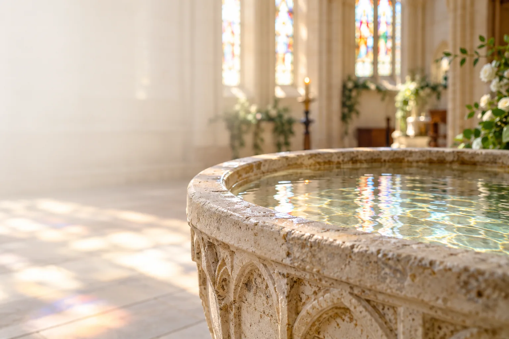
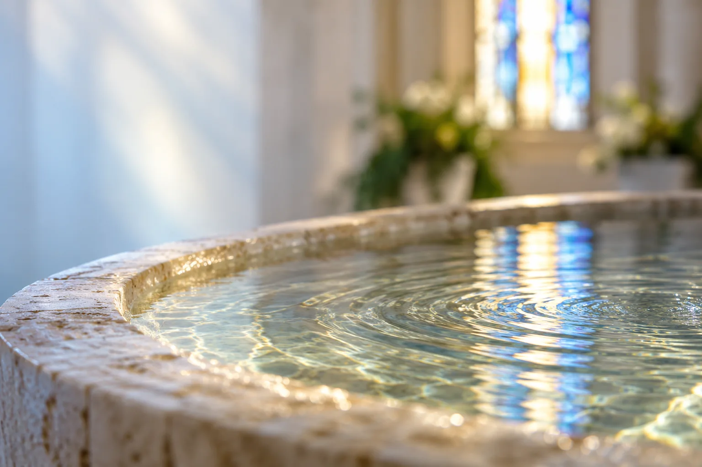

A joyful welcome
A welcome into the life of the Church.

A journey of faith
A joyful welcome into the life of the Church. Enquiries are welcome for children and adults.
Ask about a baptism Discover the baptism journey ↓A welcome into the life of the Church.
Enquiries are welcome at different stages of life.
Become connected to the worshipping life of the church.
Preparation, worship and continuing support.
A joyful beginning
Baptism is a significant step in the Christian faith and marks a person’s welcome into the life of the Church. The parish welcomes enquiries for children and adults.
Whether your enquiry is for a child or for yourself, begin by talking with the parish.
Begin a conversationThe baptism journey
Initial enquiries and bookings are made through the parish clergy or parish baptism officer.
The clergy agree arrangements and decide how exceptional circumstances should be handled.
Candidates—and, for a child, their parents or carers—will be offered appropriate preparation.
After baptism, the church continues to welcome and support the person and their family.

At the font
Baptism marks a person’s welcome into the life of the Church.
Preparation helps those involved understand its meaning, the promises made in the service and its place in Christian faith.
Useful information
The parish guidance below explains the practical details. Please talk to us about your circumstances.
Under the parish policy agreed by the PCC in September 2026, baptism will normally be available to people who live in the parish, belong to the church, regularly worship here, are on the Electoral Roll, or have another recognised connection with the parish or church. The clergy may consider other requests where there is a strong pastoral reason and, where appropriate, may seek the consent of the candidate’s own parish priest or incumbent.
Candidates—and, for a child, their parents or carers—will be offered appropriate preparation. This helps those involved understand the meaning of baptism, the promises made in the service and baptism’s place in Christian faith and the worshipping life of the church. Parents or carers should be able to make the promises with integrity. Godparents are welcome to take part in preparation where possible.
Parents or carers take part in a child’s preparation and baptism service. Before a baptism is arranged, the parish expects the family to attend several church services to become familiar with and connected to the worshipping life of the church. Godparents are chosen by the parents or carers and must be baptised. The usual expectation is three godparents, ideally two of the same sex as the child; the minimum is two, and the policy suggests a maximum of six, with flexibility where appropriate. Someone who is not baptised may be included as a sponsor or may consider baptism before the service.
Adults and older candidates receive preparation suited to their circumstances. Where appropriate, baptism may be linked with preparation for confirmation. Two or more sponsors may be chosen.
Baptisms normally take place during the main Sunday morning service, usually the All-Age Worship service listed on the first Sunday of the month. Another time may be arranged for a good pastoral or practical reason, with the clergy’s agreement. In that case, the person baptised is expected to be welcomed at a main Sunday service on another occasion. Please check the Calendar for current service dates.
Check the Calendar →Where baptism is not possible, not desired or not yet the right step, the church may offer a service of thanksgiving or blessing. This provides an opportunity to give thanks, pray for the child or candidate and mark the occasion without the baptismal promises.
The parish policy agreed by the PCC in September 2026.
Read the Baptism Policy (DOCX) ↗The parish application form supplied for baptism enquiries.
Download Baptism Application Form (PDF) ↗
Thinking about baptism?
Initial enquiries and bookings are made through the parish clergy or parish baptism officer. The clergy agree arrangements, ensure preparation takes place and decide how exceptional circumstances should be handled. After baptism, the church continues to welcome and support the person and their family through worship, teaching, pastoral care and appropriate information about church activities.
Ask about a baptismParish baptism officer
baptisms@micklehamchurch.org.uk
Font and water imagery on this Dev page is illustrative. The exterior photograph shows St Michael and All Angels.